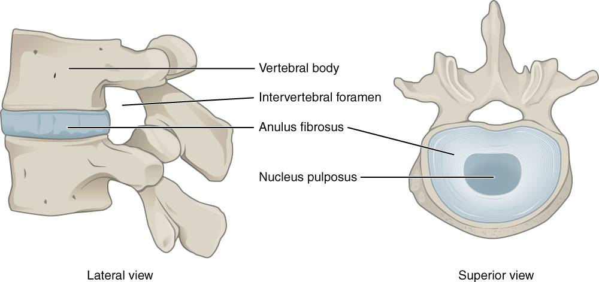

DX.3 — Radiculopathie cervicale par hernie discale
1. Définition
La Revue médicale suisse définit la hernie discale cervicale comme une lésion qui comprime une racine, la moelle, ou les deux, lorsque le fragment discal sort de l'espaceSchaller 2015. Cette compression radiculaire se nomme radiculopathie, qu'un déficit sensitivo-moteur soit déjà présent ou qu'il manque encore au moment de l'examenSchaller 2015. La même hernie devient une myélopathie lorsque les fibres longues de la moelle cervicale sont comprimées, et cette distinction change la conduiteSchaller 2015.
La S2k allemande décrit la radiculopathie cervicale comme l'irritation ou la compression d'une racine, le plus souvent par une hernie ou par un ostéophyteDGN (Deutsche Gesellschaft für Neurologie). Le symptôme directeur reste la douleur du rachis cervical qui irradie dans le bras. Les fibres nociceptives de la racine sont les premières sollicitéesDGN 2017. Le diagnostic exige des symptômes que l'on peut attribuer à une racine cervicale précise, puis une image qui confirme cette attributionDGN 2017.
La neurochirurgie de l'Inselspital de Berne précise qu'une fissure de l'anneau fibreux laisse échapper des fragments du noyau pulpeux dans le canalInselspital. Ces fragments compriment alors le nerf ou la moelle, et le disque n'a pas de mécanisme propre de réparation lorsque la dégénérescence est avancéeInselspital.
Deux définitions à ne pas mêler
Schaller définit la radiculopathie comme l'atteinte d'une racine du plexus brachial, de la cinquième cervicale à la première thoraciqueSchaller 2015. Il réserve le mot myélopathie à la souffrance des voies longues, dont le tableau et l'urgence ne sont pas ceux de la racineSchaller 2015. La S2k limite son champ aux formes dégénératives, donc à la hernie et aux remaniements osseux du foramenDGN 2017. Elle laisse de côté la hernie purement traumatique, que la revue suisse traite à part parce qu'elle exige une plaqueSchaller 2015.
Une douleur du cou sans territoire radiculaire ne suffit donc pas à poser cette définition. Le symptôme doit suivre une racineDGN 2017. Une image de hernie sans symptôme correspondant ne suffit pas non plus. La hernie cervicale peut rester une trouvaille fortuiteInselspital.
2. Épidémiologie (Suisse, puis Europe)
La prévalence de la radiculopathie cervicale vraie est de 3,3 cas pour 1000 personnes dans la revue suisse de 2015, en dessous de celle des simples cervicalgiesSchaller 2015. Elle donne par ailleurs une prévalence des cervicobrachialgies de 83,2 pour 100 000 personnes, et ces deux chiffres ne mesurent pas la même choseSchaller 2015. Plus de la moitié de la population adulte ressent au moins une fois une cervicobrachialgie, ce qui ne signifie pas une racine compriméeSchaller 2015.
L'incidence des cervicalgies y est écrite de deux façons juxtaposées, 15 % par an et 23,1 cas pour 1000 personnes-année, sans que l'une égale l'autreSchaller 2015. Le pic décrit dans cette revue se place dans les quatrième et cinquième décenniesSchaller 2015. Les hommes sont plus touchés, avec un rapport de 1,6 pour 1, et seul 0,6 % décrit un handicap fonctionnelSchaller 2015. Un traumatisme cervical est rapporté par 25 % des patients de cette série, sans que chaque traumatisme prouve une hernieSchaller 2015.
Dans la septième décennie, 85 % des patients portent des modifications cervicales radiologiques, la plupart du temps sans symptômeSchaller 2015. La DGN écrit une incidence annuelle de radiculopathie de 83,2 pour 100.000DGN 2017. Cette incidence est plus haute aux cinquième et aux sixième décennies de vie. Ce 83,2 allemand ne doit pas être additionné au 83,2 suisse des cervicobrachialgiesDGN 2017. Les dénominateurs et les libellés diffèrentDGN 2017.
Chiffres suisses, puis européens
| Mesure | Valeur lue | Population et source |
|---|---|---|
| Prévalence de la radiculopathie cervicale vraieSchaller 2015 | 3,3 pour 1000 personnesSchaller 2015 | Revue médicale suisse, 2015Schaller 2015 |
| Prévalence des cervicobrachialgies, distincte de la racineSchaller 2015 | 83,2 pour 100 000Schaller 2015 | Même revue, à ne pas relire comme une incidenceSchaller 2015 |
| Cervicalgies, deux mesures juxtaposées et non égalesSchaller 2015 | 15 % par an, et 23,1 pour 1000 personnes-annéeSchaller 2015 | Revue médicale suisse, 2015Schaller 2015 |
| Part des hommes, puis part décrivant un handicapSchaller 2015 | Rapport 1,6 pour 1, puis 0,6 %Schaller 2015 | Revue médicale suisse, 2015Schaller 2015 |
| Modifications radiologiques à la septième décennieSchaller 2015 | 85 %, le plus souvent asymptomatiquesSchaller 2015 | Revue médicale suisse, 2015Schaller 2015 |
| Incidence annuelle écrite par la ligne directrice allemandeDGN 2017 | 83,2 pour 100.000DGN 2017 | Deutsche Gesellschaft für Neurologie, 2017DGN 2017 |
| Récupération complète dans cette ligne directriceDGN 2017 | 83 % entre 24 et 36 moisDGN 2017 | Deutsche Gesellschaft für Neurologie, 2017DGN 2017 |
L'Inselspital observe que l'usure commence dès 20 ans, que la fréquence monte jusqu'à 45 ans, puis qu'elle diminue légèrementInselspital. La hernie y siège le plus souvent entre la sixième et la septième vertèbre cervicale, puis aux étages voisins, et les hommes prédominentInselspital. Le canal cervical étroit, lui, survient plus tard, souvent après 50 ans, et se confond à tort avec la hernie molleInselspital.
3. Physiopathologie
La hernie survient tôt dans la dégénérescence du segment mobile, lorsque l'anneau fibreux, fragilisé par l'âge, se déchireSchaller 2015. La hernie molle, si elle est extrudée et séquestrée, tend à se résorber, ce qui explique une part des améliorations sans opérationSchaller 2015. La douleur radiculaire vient à la fois de la déformation mécanique de la racine et d'une irritation chimique, et non de la compression seuleSchaller 2015.
Des cytokines pro-inflammatoires et le facteur de croissance nerveuse (NGF) participent à cette irritation, ce qui relie le fragment discal à la douleurSchaller 2015. Les espaces entre la cinquième et la sixième, puis entre la sixième et la septième vertèbre, portent plus de 90 % des maladies discales cervicales symptomatiquesSchaller 2015. La racine la plus souvent en cause est la septième cervicale, suivie de la sixièmeSchaller 2015. La DGN confirme ce rang pour les racines C6 (sixième racine) et C7 (septième racine)DGN 2017.
L'Inselspital décrit la même prédilection entre la sixième et la septième vertèbre, puis entre la cinquième et la sixième ou entre la quatrième et la cinquièmeInselspital. Le tabagisme, le travail physique lourd, les sollicitations inappropriées et des facteurs génétiques accélèrent cette usure, dès l'âge de 20 ansInselspital. Un accident ne crée une hernie que dans des cas exceptionnels, et seulement après un choc important chez un patient jusque-là sans symptômeInselspital.
Le schéma du disque montre pourquoi le fragment peut choisir deux chemins. Le noyau est entouré par l'anneau et le foramen est latéralSchaller 2015.
Base anatomo-fonctionnelle du disque

Sur la vue latérale, le disque bleu sépare deux corps vertébraux et le foramen s'ouvre derrière lui, là où la racine quitte le canalSchaller 2015. Sur la vue supérieure, l'anneau fibreux entoure le noyau pulpeux, de sorte qu'une déchirure de l'anneau permet au noyau de migrerInselspital. Une migration latérale comprime la racine dans le foramen, tandis qu'une migration médiane repousse la moelle, et l'image le distingueInselspital. Le dessin montre un disque sain, donc il n'y a pas de fragment à entourer, et seule l'imagerie par résonance magnétique (IRM) du patient montre la hernieSchaller 2015.
Ce que l'image décide est simple. Un conflit latéral oriente vers la racine et un conflit médian oriente vers la moelle avant même le détail moteurInselspital. Elle ne décide pas de l'opération. Une hernie visible peut être fortuite si le territoire douloureux ne correspond pasInselspital.
Chaîne, de la déchirure au signe
- L'amorce est la déchirure de l'anneau, liée à l'âge, et la hernie molle qui s'extrude peut ensuite se résorberSchaller 2015.
- Le développement est double, mécanique par déformation de la racine et chimique par les cytokines et le facteur de croissance nerveuse (NGF)Schaller 2015.
- L'installation se lit dans le territoire de la racine, surtout C7 puis C6. Ces deux racines dominent les séries luesSchaller 2015.
- Le maintien d'une douleur au-delà de plusieurs mois traduit souvent un conflit qui ne s'est pas résorbé, et non une nouvelle maladieDGN 2017.
| Perturbation | Ce qui la montre | Ce qui la corrige |
|---|---|---|
| Déchirure de l'anneau et fragment dans le canalInselspital | IRM, séquence la plus sensible en pondération T2 (séquence sensible à l'eau) selon la revue suisseSchaller 2015 | Résorption spontanée si la hernie est molle, extrudée et séquestréeSchaller 2015 |
| Irritation chimique de la racineSchaller 2015 | Douleur radiculaire reproduite par la manœuvre de SpurlingSchaller 2015 | Antalgie et anti-inflammatoire. Ils visent cette inflammationSchaller 2015 |
| Compression médiane de la moelleInselspital | Troubles de marche et hypersignal médullaire à l'IRMSchaller 2015 | Décompression. La myélopathie symptomatique avancée ne relève plus du traitement conservateurSchaller 2015 |
4. Démarche diagnostique
On écarte d'abord la myélopathie. Une atteinte de la moelle cervicale peut évoluer vers la plégie et les troubles sphinctériensSchaller 2015. Les premiers signes urinaires sont un trouble de l'initiation de la miction, puis un globe, et tardivement une incontinence fécale avec atonie sphinctérienneSchaller 2015. Cette séquence est celle de la moelle cervicale dans la revue de 2015, et elle ne décrit ni une queue de cheval ni un niveau thoraciqueSchaller 2015.
Si la moelle est comprimée et que la clinique concorde avec le rétrécissement, la revue pose l'indication chirurgicale lorsque la myélopathie est avancéeSchaller 2015. L'Inselspital tient pour absolue une compression médullaire significative avec myélopathie radiologique, que des déficits soient déjà visibles ou nonInselspital. Une parésie qui progresse vite impose aussi l'opération d'emblée. La DGN en fait une obligation opératoire, et elle s'applique d'embléeDGN 2017.
Lorsque ces gravités manquent, on cherche la racine fréquente. La septième cervicale puis la sixième expliquent la majorité des tableauxSchaller 2015. Le piège est la hernie visible chez un patient dont la douleur ne suit pas la racine comprimée, et il faut alors chercher une autre causeInselspital. L'Inselspital cite, dans ce cas, une tumeur, une atteinte inflammatoire, une épaule, une épicondylite, un plexus ou un nerf périphériqueInselspital.
Grave d'abord, fréquent ensuite
| Concurrent | Ce qui tranche | Piège | Conduite si c'est positif |
|---|---|---|---|
| Myélopathie cervicaleSchaller 2015 | Marche, miction, signe de moelle concordant avec l'imageSchaller 2015 | La prendre pour une simple névralgie de brasSchaller 2015 | Décompression, sans rester sur un traitement conservateurSchaller 2015 |
| Déficit moteur brusque ou progressifSchaller 2015 | Faiblesse qui apparaît d'un coup ou qui s'aggrave malgré le traitementSchaller 2015 | Attendre la fin d'un délai antalgiqueSchaller 2015 | Avis chirurgical. La revue le recommande alorsSchaller 2015 |
| Radiculopathie douloureuse sans déficitSchaller 2015 | Territoire radiculaire et corrélation avec l'imageInselspital | Opérer la douleur d'embléeSchaller 2015 | Traitement conservateur d'abord. Selon la revue suisse, plus de 90 % s'amendent à moyen termeSchaller 2015 |
| Douleur non congruente avec l'imageInselspital | Territoire qui ne correspond pas à la hernie vueInselspital | Conclure parce que l'IRM montre un fragmentInselspital | Chercher l'épaule, le plexus ou un nerf périphériqueInselspital |
La DGN impose en outre d'écarter une névrite du plexus. L'amyotrophie névralgique de l'épaule peut imiter la racineDGN 2017. L'électromyogramme peut rester normal dans un tiers des atteintes radiculaires cervicales, donc un tracé normal n'innocente pas la racineDGN 2017.
5. Anamnèse ciblée et drapeaux rouges
On fait décrire le trajet. La douleur de hernie latérale part du cou, gagne l'omoplate et le membre supérieur, et peut atteindre le thoraxSchaller 2015. Elle est souvent insomniante et limite les mouvements de la tête, ce qui oriente déjà vers un conflit mécanique plutôt que vers une douleur diffuseSchaller 2015. Selon la racine, l'irradiation va par exemple au pouce, aux doigts moyens ou au seul petit doigt, et ce territoire doit être notéInselspital.
Pour la racine C7, l'Inselspital décrit une douleur de la face postérieure du bras et de l'avant-bras jusqu'à l'index et au majeurInselspital. On demande la date de début et le caractère brusque du déficit. Un déficit moteur apparu d'un coup change l'indicationSchaller 2015. On demande aussi si la douleur cède sous un traitement bien conduit. L'échec prolongé fait partie des motifs opératoires de la revueSchaller 2015.
Drapeaux rouges et l'action qu'ils imposent
| Drapeau | Pourquoi il compte | Action |
|---|---|---|
| Déficit moteur apparu brusquementSchaller 2015 | La racine ou la moelle vient de perdre des axones moteursSchaller 2015 | Avis neurochirurgical, sans attendre la fin du délai antalgiqueSchaller 2015 |
| Déficit qui progresse sous traitement conservateurSchaller 2015 | La compression n'est plus compenséeSchaller 2015 | La revue recommande alors l'interventionSchaller 2015 |
| Trouble de l'initiation mictionnelle, puis globeSchaller 2015 | Signe de moelle cervicale dans cette revueSchaller 2015 | IRM cervicale et filière chirurgicale. La myélopathie avancée s'opèreSchaller 2015 |
| Trouble de la marche ou de la coordinationInselspital | La hernie médiane peut comprimer la moelleInselspital | IRM en urgence relative. La myélopathie est un problème graveInselspital |
| Douleur non contrôlée malgré un traitement bien menéSchaller 2015 | Le conflit chimique et mécanique persisteSchaller 2015 | Discuter la chirurgie après le délai que la source choisie a fixéSchaller 2015 |
| Choc important chez un patient jusque-là asymptomatiqueInselspital | Une hernie traumatique est exceptionnelle mais possibleInselspital | Chercher une instabilité. La revue exige alors une plaque et pas seulement une cageSchaller 2015 |
La revue suisse fixe ce délai douloureux à six à huit mois de traitement non chirurgical bien mené, et elle l'écrit en toutes lettresSchaller 2015. L'Inselspital parle, pour la douleur résistante, d'un délai de 6 à 8 semaines, parfois plus court, et ce n'est pas le même calendrierInselspital. La DGN recommande de proposer l'opération au plus tard six mois après le début, une fois le conservateur épuiséDGN 2017. Le médecin doit donc nommer la source avant d'annoncer un nombre de semaines. Ces trois horloges ne se remplacent pasDGN 2017.
6. Examen physique ciblé, région par région
L'examen suit l'ordre du patient assis, d'abord le cou, puis l'épaule, puis le membre supérieur, puis la marche. On rattache chaque région de l'examen assis à la structure qu'elle testeSchaller 2015. On compare toujours au côté sain avant de conclure. La revue suisse retient un territoire unilatéral dans la hernie latéraliséeSchaller 2015.
Le cou se teste en premier, et la fenêtre du cou décrit la manœuvre qui réveille la racineSchaller 2015. L'épaule vient ensuite. Une douleur d'épaule sans territoire nerveux ne doit pas être opérée comme une hernieInselspital.
On examine d'abord le cou par la mobilisation et la manœuvre de Spurling.
Viennent ensuite l'épaule, le membre supérieur, les réflexes et la force, puis la marche et la miction.
Cou : mobilité et manœuvre de Spurling
Le patient limite souvent les mouvements de la tête, et cette limitation douloureuse est le premier signe que la revue associe à la plupart des herniesSchaller 2015. La compression axiale, surtout si on y ajoute une rotation du même côté et une extension, augmente la douleur, et c'est la manœuvre de SpurlingSchaller 2015. Un Spurling positif soutient le conflit foraminal, mais il ne localise pas à lui seul la racine, et le territoire sensitif doit concorderSchaller 2015. On ne force pas la manœuvre si la marche est déjà atteinte. Une moelle comprimée ne se teste pas par une compression supplémentaire du couSchaller 2015.
Épaule et omoplate
La hernie latérale irradie vers l'omoplate, donc on palpe l'épaule sans oublier que l'épaule elle-même peut être la vraie maladieSchaller 2015. L'Inselspital cite la périarthrite scapulo-humérale et l'épicondylite comme diagnostics trompeurs lorsque l'image et la clinique divergentInselspital. Une épaule raide sans déficit radiculaire ni trajet neurologique ne justifie pas l'IRM cervicale en première intention. La source du signe est localeInselspital. Si le trajet dépasse l'épaule et gagne l'avant-bras selon une racine, l'épaule n'explique plus le tableau et la racine redevient prioritaireInselspital.
Membre supérieur : territoire sensitif
On cherche des paresthésies et une hypoesthésie dans le territoire distal de la racine, et non une hypoesthésie en gant qui évoquerait un tronc nerveuxSchaller 2015. Pour une hernie entre la sixième et la septième vertèbre, la racine C7 peut donner une douleur postérieure du bras et de l'avant-brasInselspital. Cette douleur gagne l'index et le majeur, ce qui distingue C7 d'une atteinte dont le territoire s'arrêterait au pouce ou au seul petit doigtInselspital. Le petit doigt et le pouce sont cités par l'Inselspital comme d'autres irradiations possibles, et ils doivent être cartographiés avant l'imageInselspital.
Réflexes et force de la racine C7
Le réflexe du tendon du triceps dépend d'une racine C7 intacte, donc sa diminution du côté douloureux soutient cette racineInselspital. On teste ensuite l'extension du coude et l'extension du poignet. Ces deux faiblesses accompagnent la compression de C7 dans la description bernoiseInselspital. Une faiblesse évidente est une indication chirurgicale absolue pour l'Inselspital, et elle ne se surveille pas comme une simple douleurInselspital. La revue suisse dit la même chose autrement. Un déficit moteur brusque ou progressif sous traitement conservateur conduit à l'interventionSchaller 2015.
Marche, coordination et miction
On fait marcher le patient. Une hernie médiane se révèle par un trouble de la marche ou de la coordination et par une faiblesse des membres inférieursInselspital. On interroge l'initiation de la miction avant la force des jambes. Ce trouble précède le globe dans la description de la myélopathieSchaller 2015. L'incontinence fécale et l'atonie sphinctérienne sont tardives, donc leur absence ne rassure pas si la marche est déjà anormaleSchaller 2015. Dès que ce signe de moelle est présent, il n'y a plus de place pour le traitement conservateur dans la revue, et la décompression devient le traitementSchaller 2015.
7. Approche syndromique
Quatre syndromes se séparent à l'examen. Ils n'imposent ni la même image en urgence ni le même délai avant une opérationSchaller 2015. Chaque syndrome réunit des signes fonctionnels et des signes physiques, et la fenêtre du syndrome dit comment les chercherInselspital.
On ouvre le syndrome douloureux sans déficit, le syndrome déficitaire, le syndrome médullaire, puis le syndrome non congruent.
7.1 Douleur radiculaire sans déficit
Le patient décrit une douleur du cou qui descend dans un bras, souvent insomniante, sans faiblesse évidente à la première consultationSchaller 2015. Le signe physique est un Spurling douloureux et une hypoesthésie distale limitée au territoire, avec une force encore tenueSchaller 2015. Le mécanisme est l'irritation chimique et la déformation de la racine, souvent réversible lorsque la hernie molle se résorbeSchaller 2015. Ce syndrome autorise le traitement conservateur. On retient plus de 90 % des radiculopathies par hernie qui s'amendent sans chirurgie à moyen termeSchaller 2015.
7.2 Radiculopathie déficitaire
La douleur s'accompagne d'une faiblesse, et pour la racine C7 il s'agit de l'extension du coude et du poignetInselspital. Le réflexe tricipital est diminué, ce qui ancre le déficit sur C7 plutôt que sur une épaule douloureuseInselspital. Un déficit moteur évident constitue une indication chirurgicale absolue pour la neurochirurgie bernoiseInselspital. Un déficit qui progresse sous traitement conservateur conduit aussi à l'intervention dans la revue suisseSchaller 2015. Attendre six mois une faiblesse qui s'aggrave serait contraire aux deux sources. Le délai long cité par la revue ne concerne que la douleur isoléeSchaller 2015.
7.3 Compression médullaire
La hernie médiane comprime la moelle, et le patient marche mal ou se coordonne mal, avec parfois une faiblesse des jambesInselspital. La miction s'initie mal, puis un globe apparaît, et l'incontinence fécale n'arrive que tard, donc on ne l'attend pas pour agirSchaller 2015. L'IRM peut montrer un hypersignal médullaire en T2, une diminution du diamètre antéro-postérieur, ou un hyposignal en T1 (séquence anatomique)Schaller 2015. La revue retire alors toute place au traitement conservateur. Une compression directe ou une ischémie de la microcirculation atteint la moelleSchaller 2015.
7.4 Image et clinique qui ne concordent pas
La hernie est sur l'image, mais la douleur ne suit pas la racine comprimée, ou elle reste confinée à l'épauleInselspital. Le signe physique manque, le Spurling est négatif, et un autre appareil explique mieux la plainteInselspital. L'Inselspital rappelle qu'une hernie cervicale asymptomatique est une trouvaille possible, au même titre que les remaniements de la septième décennieInselspital. Opérer cette image exposerait le patient sans traiter la cause, et la revue exige une corrélation clinico-radiologique avant l'interventionSchaller 2015.
8. Diagnostic positif et critères
Le diagnostic positif réunit trois conditions lues dans les sources suisses. Aucune des trois ne suffit seuleSchaller 2015. Il faut un territoire de racine cervicale, une hernie au niveau qui correspond, et l'absence d'un signe de moelle que l'on aurait négligéInselspital. La DGN pose ici la même exigence que les sources suisses. L'anamnèse et l'examen doivent être confirmés par une image, de préférence l'IRMDGN 2017.
La douleur isolée du cou ne suffit pas. Elle est bien plus fréquente que la radiculopathie vraie, dont la prévalence lue est de 3,3 pour 1000Schaller 2015. L'image isolée ne suffit pas. 85 % des patients de la septième décennie ont des modifications radiologiques, le plus souvent silencieusesSchaller 2015. Un électromyogramme normal ne suffit pas à écarter la racine. Il reste normal dans un tiers des atteintes cervicales selon la ligne directriceDGN 2017.
Ce qui suffit et ce qui ne suffit pas
| Critère | Suffit-il seul | Conséquence |
|---|---|---|
| Douleur cervico-brachialeSchaller 2015 | Non. Plus de la moitié des adultes en ont au moins une foisSchaller 2015 | Chercher le territoire radiculaire avant de parler de hernieSchaller 2015 |
| Déficit moteur dans le myotome, par exemple C7Inselspital | Il impose l'avis chirurgical même sans attendre la fin du délai douloureuxInselspital | Ne pas le classer comme une douleur simpleSchaller 2015 |
| Hernie à l'IRM concordanteDGN 2017 | Elle confirme, elle ne découvre pas le diagnostic à la place de l'examenDGN 2017 | Corréler le niveau, le côté et la racineSchaller 2015 |
| Signe de moelle ou myélopathie radiologiqueInselspital | Il change de diagnostic pratique et rend la décompression nécessaireSchaller 2015 | Sortir du cadre de la radiculopathie douloureuseInselspital |
9. Examens complémentaires
L'examen de référence est clinique d'abord, puis l'IRM le confirme. La revue suisse écrit que l'IRM est requise pour voir le disque, le nerf et le liquideSchaller 2015. La séquence la plus sensible et la plus spécifique y est la pondération T2, et le scanner seul est moins utile, surtout de C6 à la première thoraciqueSchaller 2015. Le scanner sert à montrer une sténose foraminale osseuse, et le myélo-scanner remplace l'IRM lorsqu'elle est contre-indiquée ou peu concluanteSchaller 2015.
L'Inselspital confirme cet ordre. La suspicion clinique est vérifiée par l'IRM cervicale, le scanner regardant l'os, et le myélo-scanner restant l'alternativeInselspital. L'électroneuromyogramme (ENMG) ne constitue pas le premier examen devant une racine cervicale. La revue le réserve au doute clinique ou lorsque plusieurs racines semblent en causeSchaller 2015. Il devient anormal dans les muscles concernés à partir de trois semaines après la compression, donc un tracé trop précoce peut être faussement rassurantSchaller 2015.
9.a et 9.b Image de première intention
On prescrit une IRM cervicale, avec des coupes sagittales et axiales en T2, du côté de la douleur. La hernie paramédiane se voit sur l'axialeSchaller 2015. Un hypersignal médullaire en T2, un hyposignal en T1 ou une baisse du diamètre antéro-postérieur signent la souffrance de moelle et non la seule racineSchaller 2015. La DGN demande cette confirmation par l'image, de préférence l'IRM, en tenant compte des contre-indications, sans remplacer l'examen neurologiqueDGN 2017. Si l'IRM est impossible, le myélo-scanner est l'alternative lue, et c'est un examen invasif qui peut demander une courte hospitalisationSchaller 2015.
On n'attend pas six semaines pour imager un déficit moteur ou un trouble de marche. Ces signes sortent du cadre de la douleur simpleInselspital. Pour une douleur isolée qui s'améliore, l'image peut attendre. Schaller écrit que plus de 90 % s'amendent, et que la hernie molle séquestrée tend à se résorberSchaller 2015.
9.d Électricité : deux délais à ne pas confondre
La revue suisse décrit l'anomalie électroneuromyographique à partir de trois semaines dans les muscles de la racine compriméeSchaller 2015. La S2k demande un électromyogramme au plus tôt dix jours après le début si la racine reste incertaineDGN 2017. Ces deux délais ne disent pas la même chose. L'un date l'anomalie attendue et l'autre date le moment où l'examen peut commencerDGN 2017. Les signes de dénervation dans le muscle clé sont un argument opératoire pour la DGNDGN 2017. Un tracé normal dans un tiers des cas ne doit pas faire écarter la racineDGN 2017. Les potentiels évoqués somesthésiques testent les grosses fibres myélinisées, et les potentiels évoqués moteurs renseignent le premier motoneurone, selon la revueSchaller 2015.
Lecture d'un compte rendu
| Résultat | Signification | Conduite |
|---|---|---|
| Hernie latérale ou foraminale concordante avec C7Inselspital | Conflit de racine, souvent accessible par voie antérieure ou par foraminotomieInselspital | Conservateur si la force est tenue, avis chirurgical si la force tombeSchaller 2015 |
| Hernie médiane avec souffrance médullaireSchaller 2015 | Myélopathie, par compression ou par ischémie de la microcirculationSchaller 2015 | Décompression, sans programme conservateur de plusieurs moisSchaller 2015 |
| Sténose osseuse du foramen au scannerSchaller 2015 | Conflit osseux, plus fréquent chez le sujet âgé que la hernie molleDGN 2017 | Ne pas promettre une résorption. L'os ne se résorbe pas comme une hernie molleSchaller 2015 |
| Image de hernie sans territoire correspondantInselspital | Trouvaille possible, surtout après 50 ans pour le canal étroitInselspital | Reprendre l'épaule, le plexus et le nerf périphériqueInselspital |
| Électromyogramme normal avant trois semainesSchaller 2015 | L'examen peut être trop tôt selon la revue suisseSchaller 2015 | Ne pas conclure à l'absence de conflit radiculaireDGN 2017 |
10. Arbre décisionnel
L'arbre commence par la moelle et par le déficit qui progresse. Ces deux branches ne supportent pas l'attente d'un traitement antalgiqueSchaller 2015. La douleur concordante sans déficit descend ensuite vers le traitement conservateur, et le calendrier opératoire dépend de la source que l'on citeDGN 2017.
- Si la marche, la coordination ou la miction sont atteintes, alors on demande l'IRM cervicale et un avis chirurgical. On opère la myélopathie avancée sans la laisser sous un simple traitement d'attenteSchaller 2015.
- Si un déficit moteur est évident ou s'aggrave, alors l'indication est absolue pour l'Inselspital et recommandée par la revue, sans attendre six moisInselspital.
- Si la parésie progresse rapidement, alors la ligne directrice allemande impose une voie d'abord opératoire d'embléeDGN 2017.
- Si la douleur suit une racine, que la force tient et que l'image concorde, alors on commence par le traitement conservateur. Selon la revue suisse de Schaller, plus de 90 % s'amendent à moyen termeSchaller 2015.
- Si cette douleur ne cède pas, alors on nomme le délai de la source que l'on a choisi de suivreSchaller 2015. La revue parle de six à huit mois, la ligne directrice de six mois, et l'Inselspital de 6 à 8 semainesInselspital.
- Si l'image et le territoire divergent, alors on arrête l'arbre de la hernie et l'on cherche l'épaule, le plexus ou un nerf périphériqueInselspital.
La hernie médiane et paramédiane se décomprime par voie antérieure, tandis que la hernie latérale ou foraminale peut aussi relever d'une foraminotomie postérieureDGN 2017. L'Inselspital détaille la même répartition, et il nomme la foraminotomie postérieure selon Frykholm pour la hernie foraminale isoléeInselspital.
11. Prise en charge selon les recommandations suisses
11.A But
Le but immédiat est de protéger la moelle et la force. Un déficit qui s'installe ou une myélopathie avancée ne se rattrapent pas par l'antalgie seuleSchaller 2015. Le but secondaire est de rendre la douleur compatible avec le sommeil et le mouvement, le temps que la hernie molle se résorbe ou qu'une indication se préciseSchaller 2015. À trois mois, la chirurgie baisse le score de l'échelle visuelle analogique (EVA) de 42 %, selon l'étude citée par la revueSchaller 2015. La physiothérapie le baisse de 18 %, et la minerve rigide de 2 % dans la même comparaisonSchaller 2015. À un an, la douleur, la fonction et l'humeur ne diffèrent plus dans la même comparaisonSchaller 2015. Le gain précoce de la chirurgie ne dure donc pas pour la douleur isoléeSchaller 2015.
11.B Moyens
Sans déficit invalidant, la ligne directrice impose un traitement d'abord conservateur, et la revue suisse le compose d'une activité réduite, d'une antalgie et d'une physiothérapieDGN 2017. La physiothérapie associe thérapie manuelle et exercices, et elle doit commencer tôt lorsque la radiculopathie vient d'une hernie, selon la ligne directriceDGN 2017. Une minerve souple peut limiter la rotation chez le patient qui ne peut pas réduire son activitéSchaller 2015. La revue conçoit ce soutien pour une durée de six à huit mois, en complément de l'antalgie et de la physiothérapieSchaller 2015. L'Inselspital ajoute, pour les symptômes sévères, une infiltration de cortisone au contact de la racine, dont le taux de succès lu est d'environ 70 %Inselspital.
Le paracétamol est le premier palier. L'information professionnelle de Dafalgan indique les douleurs dorsales d'intensité faible à modérée, et la revue suisse le cite en antalgie simpleDafalgan. L'ibuprofène vient ensuite. Brufen indique explicitement les névralgies secondaires à des lésions discales parmi les formes rhumatismales extra-articulairesBrufen. La prégabaline s'envisage si la douleur est neuropathique. Lyrica est indiqué dans les douleurs neuropathiques périphériques et centrales de l'adulteLyrica. Les études citées par cette information professionnelle portent sur la polyneuropathie diabétique et la névralgie post-herpétiqueLyrica. Elles portent aussi sur la lésion médullaire, et non sur un essai dédié à la hernie cervicaleLyrica.
Les fiches donnent la dose, la grossesse et l'allaitement : Dafalgan, Brufen et Lyrica.
Dafalgan, paracétamol
Dafalgan, paracétamol, autorisation 47503, a son information mise à jour en juillet 2026Dafalgan. Il se donne per os, et la dose adulte de plus de 40 kg va de 500 à 1000 mg par priseDafalgan. Il ne faut pas dépasser la dose journalière maximale de 4000 mg de paracétamol, et l'intervalle entre deux prises est de 4 à 8 heures chez l'adulteDafalgan. Si la clairance de la créatinine est de 10 à 50 ml par minute, l'intervalle passe à 6 heures et le maximum à 3000 mg par jourDafalgan. Si cette clairance est inférieure à 10 ml par minute, l'intervalle passe à 8 heures et le maximum à 2000 mg par jourDafalgan.
| Rubrique | Texte de l'information professionnelle |
|---|---|
| Grossesse | En cas de nécessité clinique, le paracétamol peut être pris ou utilisé pendant la grossesse. Toutefois, il convient de prendre ou d'utiliser la dose efficace la plus faible pendant la durée la plus courte possible et à la fréquence la plus basse possible. |
| Allaitement | Bien que l'utilisation du paracétamol soit considérée comme compatible avec l'allaitement, la prudence est de mise lors de l'utilisation du Dafalgan pendant l'allaitement. |
| Contre-indications | Hypersensibilité au paracétamol et aux substances apparentées ou à un des excipients. Troubles fonctionnels hépatiques graves. |
Brufen, ibuprofène
Brufen, ibuprofène, autorisation 45031, information mise à jour en décembre 2024, indique les névralgies secondaires à des lésions discalesBrufen. Dans les affections rhumatismales, la dose initiale est de 1200 à 1800 mg par jourBrufen. Elle est répartie en plusieurs doses, et beaucoup se maintiennent entre 600 et 1200 mg par jourBrufen. Dans certains cas la dose quotidienne peut atteindre 2400 mg, mais il faut la dose efficace la plus faible pendant le minimum de temps nécessaireBrufen. Une dose élevée de 2400 mg par jour est associée, dans l'information professionnelle, à une légère augmentation du risque d'événements thrombotiques artérielsBrufen. Les comprimés à 400 mg et à 600 mg ne doivent pas être utilisés chez l'enfant de moins de 12 ansBrufen.
| Rubrique | Texte de l'information professionnelle |
|---|---|
| Grossesse | A moins d'une nécessité clairement établie, l'utilisation de l'ibuprofène est à éviter au cours du premier et du deuxième trimestre de la grossesse. Pendant le troisième trimestre de la grossesse, l'ibuprofène figure parmi les contre-indications. |
| Allaitement | Par prudence, l'ibuprofène ne doit donc pas être pris pendant l'allaitement. Si le traitement est indispensable, le nourrisson doit être sevré. |
| Contre-indications | Ulcère gastrique ou duodénal actif ou dans l'anamnèse, et insuffisance rénale grave avec clairance de la créatinine inférieure à 30 ml par minute. On y ajoute l'insuffisance cardiaque grave et le troisième trimestre de la grossesse. |
Lyrica, prégabaline
Lyrica, prégabaline, autorisation 57057, information mise à jour en juillet 2026, est indiqué dans les douleurs neuropathiques périphériques et centrales de l'adulteLyrica. Le traitement initial est de 150 mg par jour, soit 75 mg deux fois par jour, soit 50 mg trois fois par jour, avec ou entre les repasLyrica. Selon la réponse et la tolérance, on peut monter à 300 mg par jour après un intervalle de 3 à 7 joursLyrica. La dose maximale de 600 mg par jour reste permise seulement après un intervalle supplémentaire de 7 joursLyrica. Dans les polyneuropathies diabétiques, les doses de 300 mg et de 600 mg ont été supérieures au placebo, ce qui ne constitue pas un essai de hernie cervicaleLyrica.
| Rubrique | Texte de l'information professionnelle |
|---|---|
| Grossesse | On ne dispose que de données limitées sur l'administration de la prégabaline chez la femme enceinte. |
| Allaitement | La sécurité d'emploi de la prégabaline chez les nourrissons est inconnue, il est donc recommandé de ne pas allaiter pendant le traitement. |
| Contre-indications | Hypersensibilité au principe actif ou à l'un des excipients. Les patients présentant une intolérance héréditaire rare au galactose, un déficit total en lactase ou une malabsorption du glucose-galactose ne doivent pas prendre Lyrica. |
Urgence, conduite chronologique
- Dès la première heure, si la marche ou la miction changent, on arrête le calendrier ambulatoire et l'on organise l'IRM et l'avis chirurgicalSchaller 2015.
- Dans la même séquence, on ne donne pas une minerve rigide comme traitement de la moelle. La revue suisse exclut la minerve rigide du traitement de la moelleSchaller 2015.
- Si seule la douleur est présente, on commence le paracétamol le jour même, dans les limites de l'information professionnelle, et l'on réévalue la forceDafalgan.
- Si la douleur reste neuropathique après ce palier, la prégabaline peut être introduite à 150 mg par jourLyrica. Cette dose est bien la dose initiale de l'information professionnelleLyrica.
- À 6 à 8 semaines, l'Inselspital réévalue l'indication relative si la douleur intense persiste, sans confondre ce délai avec les six à huit mois de la revueInselspital.
Dans la revue, l'infiltration associe un anesthésique local et une cortisone autour de la racineSchaller 2015. La visée est diagnostique ou thérapeutique, avec jusqu'à 60 % de soulagement prolongé dans plusieurs étudesSchaller 2015. Les complications en sont rares mais peuvent être sévères, y compris un infarctus de racine ou du tronc cérébral, donc le geste ne s'improvise pasSchaller 2015. La chirurgie antérieure retire le disque et le remplace par une cage, technique popularisée en 1958Schaller 2015. Le taux de complications globales de cet abord est de 2,4 %Schaller 2015. Quatre-vingts à 90 % des patients ont un résultat jugé bon ou excellent après l'abord antérieur, et l'enrouement fréquent disparaît en 24 à 48 heuresSchaller 2015.
Voie, risques et suites lues
L'incision antérieure mesure 3 à 4 cm, et le risque de lésion nerveuse ou médullaire reste inférieur à 1 %Inselspital. La perte de mobilité est d'environ 7 degrés par segment fusionné, ce qui reste peu gênant au quotidienInselspital. L'usure du segment adjacent concerne 3 % des patients après fusion, ce qui explique l'alternative de la prothèse lorsque l'on veut garder le mouvementInselspital. La foraminotomie postérieure selon Frykholm laisse le disque en place et permet un taux de réussite d'environ 90 % pour la hernie foraminale isoléeInselspital. Un enrouement qui persiste après 48 heures doit faire chercher le nerf laryngé récurrent, et une douleur de déglutition persistante doit faire contrôler la position de l'implantSchaller 2015. Un hématome postopératoire peut comprimer les voies aériennes, donc cette complication se traite comme une menace vitale et non comme une douleur banaleSchaller 2015. La plupart des patients opérés à l'Inselspital restent environ 4 joursInselspital. Le retour à domicile est possible dès le deuxième jour, et la récupération s'étend de 2 à 6 semainesInselspital.
11.C Surveillance
Sous traitement conservateur, on revoit la force et le territoire à chaque palier. L'apparition d'un déficit fait sortir du calendrier de la douleur seuleSchaller 2015. La prothèse discale impose, dans la revue, une radiographie le lendemain, puis à six semaines et à trois moisSchaller 2015. Après l'opération, la revue surveille la cicatrice, évite les rotations rapides et les charges, et n'autorise la conduite qu'une fois la mobilité cervicale restauréeSchaller 2015. La marche à plat est possible dès la sortie, la natation dès la deuxième semaine si la cicatrice est fermée, et les exercices isométriques dès la troisième semaineSchaller 2015. On arrête l'anti-inflammatoire plus tôt si un signe digestif ou une contre-indication de l'information professionnelle apparaît. La dose doit rester la plus faible efficaceBrufen.
11.D Pronostic
Sans opération, plus de 90 % des radiculopathies par hernie s'amendent à moyen terme selon la revueSchaller 2015. Selon l'Inselspital, 90 % des douleurs radiculaires aiguës s'améliorent en 6 à 8 semainesInselspital. La DGN décrit une amélioration dans les quatre à six premiers mois, puis une récupération complète chez 83 % des patients entre 24 et 36 moisDGN 2017. À deux ans, deux essais cités par cette ligne directrice ne montrent pas de supériorité de l'opération première sur le programme conservateur structuréDGN 2017. Entre cinq et huit ans, l'opération première améliore la mobilité et la douleur du cou, mais non la douleur du bras ni la santé ressentieDGN 2017. La douleur qui dépasse six mois est appelée chronique dans cette ligne directrice, et elle relève alors d'un programme multimodal si l'opération n'est pas indiquéeDGN 2017.
Exemple chiffré des plafonds
Quatre prises de 1000 mg de paracétamol atteignent le plafond de 4000 mg, donc une cinquième prise du même jour le dépasseDafalgan. Chez l'adulte de plus de 40 kg, la prise unitaire va de 500 à 1000 mg, et l'on espace ces prises de 4 à 8 heuresDafalgan. Trois prises de 600 mg d'ibuprofène font 1800 mg, ce qui reste dans la fourchette initiale de 1200 à 1800 mg des affections rhumatismalesBrufen. Monter jusqu'à 2400 mg ne doit pas devenir le réflexe de prescriptionBrufen. L'information professionnelle lie cette dose élevée à un surcroît d'événements thrombotiques artérielsBrufen. La prégabaline ne se calcule pas au poids chez l'adulte. L'information professionnelle fixe 150 mg par jour au départ, puis 300 mg, puis au plus 600 mgLyrica.
Si la clairance tombe entre 10 et 50 ml par minute, le paracétamol doit changer d'intervalle et de plafondDafalgan. L'intervalle doit passer à 6 heures et le plafond à 3000 mg, avant un anti-inflammatoireDafalgan. En dessous de 10 ml par minute, le plafond du paracétamol doit descendre à 2000 mgDafalgan. L'intervalle doit passer à 8 heures, et l'on ne recopie pas l'ordonnance de l'adulte sainDafalgan. L'ibuprofène est contre-indiqué si la clairance est inférieure à 30 ml par minute, donc le palier anti-inflammatoire disparaît avant le palier du paracétamolBrufen.
Trois horloges pour la même douleur
Un patient sans déficit, dont l'image concorde, entre dans le traitement conservateur. Selon la revue suisse, plus de 90 % s'amendent à moyen termeSchaller 2015. À la sixième semaine, l'Inselspital peut déjà parler d'indication relative si la douleur intense persiste, et ce seuil est de 6 à 8 semainesInselspital. La revue suisse, elle, n'appelle la chirurgie pour cette même douleur qu'après six à huit mois d'un traitement non chirurgical bien menéSchaller 2015. Cette S2k reste entre les deux délais des sources déjà citées. Elle recommande de proposer l'opération au plus tard six mois après le débutDGN 2017. Annoncer un seul de ces chiffres comme s'il était universel serait une erreur d'examen. Les trois textes ont été lus et ils divergentDGN 2017. Le déficit moteur, lui, ne consulte aucune de ces horloges. Il sort du cadre de la douleur isolée dans les sources suissesInselspital.
Pièges d'examen au lit du patient
Un Spurling douloureux sans hypoesthésie distale ne localise pas la racine, et il faut encore le territoire avant de demander l'opérationSchaller 2015. Une épaule raide qui n'irradie pas selon une racine se traite comme une épaule, même si une hernie fortuite apparaît plus tard à l'imageInselspital. La diminution isolée du réflexe tricipital oriente vers C7, mais elle ne remplace pas l'épreuve de l'extension du coude et du poignetInselspital. La force conservée des bras ne doit pas rassurer si la marche change. La hernie médiane touche la moelle et non le myotome du brasInselspital. L'absence d'incontinence fécale ne doit pas clore l'interrogatoire. Le trouble d'initiation mictionnelle vient plus tôtSchaller 2015.
Le médecin qui retient la hernie cervicale doit donc pouvoir redire, sans mélange, le territoire, le délai choisi et la raison pour laquelle la moelle a été écartéeSchaller 2015. Cette phrase de synthèse ne remplace pas les critères. Chacun d'eux reste attaché au texte qui l'a formuléDGN 2017.
Ce que le traitement conservateur contient vraiment
La revue compose le premier choix d'une antalgie, d'un anti-inflammatoire adapté ou de corticoïdes, parce que plus de 90 % s'amendent sans chirurgieSchaller 2015. Elle ajoute une activité physique réduite et une physiothérapie, et elle n'envoie au bloc ni la douleur concordante ni l'image seuleSchaller 2015. Les corticoïdes y sont décrits en schéma dégressif, sans qu'une posologie en milligrammes soit à recopier depuis cette revueSchaller 2015. Un myorelaxant est mentionné pour les spasmes paravertébraux, et la dose lue dans la revue n'est pas reprise ici. Elle ne vient pas de l'information professionnelleSchaller 2015. Lorsque la douleur radiculaire résiste, la revue discute une dexaméthasone brève et dégressive, toujours sans milligramme à transcrire dans cette leçonSchaller 2015.
La DGN demande que la douleur soit traitée tôt et assez fort, avec un antalgique classique et une substance active sur la douleur neuropathiqueDGN 2017. C'est la raison d'introduire la prégabaline seulement après avoir qualifié la douleur de neuropathique, et non à la place du paracétamol le premier jourLyrica. L'ibuprofène reste le palier anti-inflammatoire nommé par son information professionnelle pour la névralgie d'une lésion discale, à la dose rhumatismale la plus faibleBrufen. On n'additionne pas les plafonds. Le paracétamol et l'ibuprofène ont des contre-indications différentes, surtout rénales et digestivesBrufen.
Reprise après l'abord antérieur
La revue autorise une activité physique douce dès la sortie, comme la marche à plat, et elle écarte les chemins pentus à cause des chutesSchaller 2015. Les marches plus longues deviennent possibles dès la troisième semaine, en même temps que le reconditionnement isométrique et la physiothérapieSchaller 2015. La natation, comprise comme une physiothérapie dans l'eau, peut commencer dès la deuxième semaine si la cicatrice est bien ferméeSchaller 2015. Le travail sédentaire reprend progressivement dès deux semaines, tandis que la conduite attend le retour complet de la mobilité cervicaleSchaller 2015. Les rotations rapides et le port de charges augmentent la douleur cervicale postopératoire, donc ils se diffèrent même lorsque la marche est déjà facileSchaller 2015. L'Inselspital, de son côté, ne prescrit pas de minerve après ses opérations cervicales, et la durée d'hospitalisation habituelle est d'environ 4 joursInselspital.
Ces repères de reprise ne s'appliquent pas à la hernie traumatique instable. La revue exige alors une plaque antérieure en plus de la cageSchaller 2015. Ils ne s'appliquent pas non plus à la myélopathie, dont le pronostic dépend de la décompression et non du calendrier de la douleur isoléeDGN 2017.
Quand l'image peut attendre, et quand elle ne le peut pas
La douleur radiculaire aiguë sans déficit peut s'améliorer dans les 6 à 8 premières semaines, selon le texte bernois, et l'image n'est pas alors le premier gesteInselspital. Cette attente cesse dès qu'une faiblesse apparaît. L'indication chirurgicale devient absolue et l'IRM sert à confirmer le niveauInselspital. Elle cesse aussi dès qu'un trouble de marche ou de miction apparaît. La revue retire alors le traitement conservateurSchaller 2015. Une hernie molle extrudée et séquestrée tend à se résorber, ce qui justifie de ne pas opérer la seule image chez un patient qui va mieuxSchaller 2015. Le scanner ne remplace pas cette décision. Il voit mal les parties molles et il est surtout utile pour le foramen osseuxSchaller 2015.
Choisir la voie une fois l'indication posée
La hernie médiane se retire par devant, avec le disque. Elle comprime la moelle et la voie postérieure ne l'atteint pas aussi directementInselspital. La hernie paramédiane peut se traiter par voie antérieure ou par foraminotomie postérieure selon Frykholm, et le choix se fait au cas par casInselspital. La hernie foraminale isolée se prête à la décompression postérieure, qui enlève le fragment et laisse le disque, avec un succès lu d'environ 90 %Inselspital. Pour le choix des voies d'abord, la S2k dit la même répartition. Le conflit médian ou paramédian doit prendre la voie ventrale, tandis que le conflit latéral admet les deuxDGN 2017. Après une fusion, la mobilité du segment baisse d'environ 7 degrés, et 3 % des patients usent davantage le segment voisinInselspital.
Le patient doit entendre ces deux chiffres de suite, le succès et la perte de mobilité, avant de choisir entre la cage et la prothèseInselspital. La prothèse garde le mouvement du segment, mais elle ne rend pas la mobilité d'un rachis sain, et des douleurs cervicales tardives restent possiblesInselspital.
Caractériser la douleur avant de la traiter
On demande si la douleur réveille la nuit. La revue la décrit souvent insomniante, ce qui pèse sur le choix d'un palier et non sur l'indication opératoireSchaller 2015. On demande ce qui la calme et ce qui l'augmente. La rotation et l'extension du cou réveillent le conflit foraminal lors du SpurlingSchaller 2015. On demande si elle descend dans le thorax. La hernie latérale peut irradier à la poitrine sans être une douleur viscéraleSchaller 2015. On demande un traumatisme récent et son énergie. 25 % des patients de la revue décrivent un traumatisme cervical, sans que chacun soit une hernie traumatiqueSchaller 2015. Seuls un choc important et un cou jusque-là silencieux rendent l'hypothèse traumatique recevable, selon le texte bernoisInselspital.
12. Prévention
La prévention primaire limite le tabac, le travail physique lourd et les sollicitations inappropriées. L'Inselspital les lie à l'usure discale qui commence dès 20 ansInselspital. La revue ajoute l'école du dos chez le patient jeune déjà opéré. Une hernie précoce annonce souvent une dégénérescence disco-ligamentaire plus largeSchaller 2015. Après l'opération, la prévention secondaire évite les rotations rapides et le port de charges. La douleur cervicale peut augmenter avec ces deux contraintesSchaller 2015. Le patient sédentaire peut reprendre progressivement dès deux semaines, tandis que les chemins pentus se évitent à cause du risque de chuteSchaller 2015. La prévention tertiaire surveille le segment adjacent. La fusion augmente son usure chez 3 % des patients dans la série bernoiseInselspital.
13. Points clés
Une hernie cervicale n'est une radiculopathie que si le territoire, la force et l'image désignent la même racine, le plus souvent C7 ou C6Schaller 2015.
Dans cet arbre de tri, la moelle doit passer avant la douleur isolée. Un trouble de marche ou de miction retire le traitement conservateur et conduit à la décompressionSchaller 2015.
Un déficit moteur évident ou progressif ne se surveille pas pendant des mois. Les sources suisses le tiennent pour une indication opératoireInselspital.
Le délai de la douleur isolée ne reste pas unique d'une source à l'autre. Schaller retient six à huit mois, la DGN retient six mois, et l'Inselspital retient 6 à 8 semainesSchaller 2015.
Schaller compte plus de 90 % des formes douloureuses qui s'amendent sans chirurgie à moyen termeSchaller 2015. L'image isolée d'une hernie ne suffit jamais à opérerSchaller 2015.
14. Pièges et questions fréquentes à l'examen fédéral suisse
| Question | Réponse | Raison |
|---|---|---|
| Peut-on opérer une cervicalgie parce que l'IRM montre une hernieInselspital | Non, sauf corrélation clinico-radiologique et critère de gravité ou d'échecSchaller 2015 | La hernie asymptomatique existe, et 85 % des images de la septième décennie sont souvent silencieusesSchaller 2015 |
| Quel délai annoncer avant d'opérer une douleur isolée bien traitéeSchaller 2015 | Il faut citer la source. Six à huit mois, six mois et 6 à 8 semaines coexistentInselspital | Mélanger ces horloges change l'indication sans que le patient ait changéDGN 2017 |
| Un déficit moteur progressif autorise-t-il d'attendre la fin du délai antalgiqueSchaller 2015 | Non, la revue et l'Inselspital en font une indication opératoireInselspital | Le délai long est écrit pour la douleur mal contrôlée, non pour la force qui tombeSchaller 2015 |
| Un trouble mictionnel avec hernie cervicale est-il une queue de chevalSchaller 2015 | Non, la revue de 2015 le rattache à la moelle cervicaleSchaller 2015 | Elle décrit l'initiation, le globe, puis tardivement le sphincter, sans niveau sous le couSchaller 2015 |
| Quelle dose initiale de prégabaline si la douleur radiculaire est neuropathiqueLyrica | 150 mg par jour, en deux ou trois prises, selon l'information professionnelleLyrica | L'indication couvre la douleur neuropathique périphérique, et les essais cités ne sont pas ceux de la hernieLyrica |
| Peut-on poursuivre l'ibuprofène au troisième trimestreBrufen | Non, le troisième trimestre figure parmi les contre-indications de BrufenBrufen | Le premier et le deuxième trimestre s'évitent aussi, sauf nécessité clairement établie, à la dose la plus faibleBrufen |
| Un électromyogramme normal à dix jours exclut-il la racineDGN 2017 | Non. Un tiers des atteintes cervicales gardent un tracé normal, et la revue n'attend l'anomalie qu'après trois semainesSchaller 2015 | Les deux délais mesurent des choses différentes et aucun des deux n'innocente la cliniqueDGN 2017 |
| La chirurgie améliore-t-elle encore la douleur du bras à un anSchaller 2015 | La comparaison citée ne montre plus de différence à un an sur la douleur, la fonction et l'humeurSchaller 2015 | À trois mois, la baisse de l'échelle visuelle analogique était de 42 % après chirurgie, 18 % après physiothérapie et 2 % avec la minerveSchaller 2015 |
Sources
- Schaller K, Culebras D, Bartoli A. Hernie discale cervicale, diagnostic et prise en charge. Revue médicale suisse. 2015;492. Publié le 25 novembre 2015. https://www.revmed.ch/revue-medicale-suisse/2015/revue-medicale-suisse-492/hernie-discale-cervicale-diagnostic-et-prise-en-charge — consulté le 15 novembre 2026.
- Schär R, Zubak I. Hernie discale cervicale. Neurochirurgie, Inselspital, Berne. https://neurochirurgie.insel.ch/fr/erkrankungen-spezialgebiete/wirbelsaeule/les-hernies-discales/hernie-discale-cervicale — page lue le 15 novembre 2026. Les images de cette page sont sous licence CC BY-NC et n'ont pas été copiées.
- Pohl M et al. S2k-Leitlinie Zervikale Radikulopathie. Deutsche Gesellschaft für Neurologie. Révision du 6 novembre 2017, en ligne le 14 décembre 2017. https://www.dgn.org/leitlinie/zervikale-radikulopathie — texte lu le 15 novembre 2026.
- Swissmedic, information professionnelle Dafalgan, paracétamol, numéro 47503, mise à jour juillet 2026. https://files.refdata.ch/simis-public-prod/MedicinalDocuments/783cc01c6fa7448399362d9df7d4be78-fr.html
- Swissmedic, information professionnelle Brufen, ibuprofène, numéro 45031, mise à jour décembre 2024. https://files.refdata.ch/simis-public-prod/MedicinalDocuments/b63870557e734d65a125b488d681c6a6-fr.html
- Swissmedic, information professionnelle Lyrica, prégabaline, numéro 57057, mise à jour juillet 2026. https://files.refdata.ch/simis-public-prod/MedicinalDocuments/5926845263604af7afccac13280ac581-fr.html
Le contenu reprend les sources citées. Il n'a pas été validé cliniquement par un médecin.